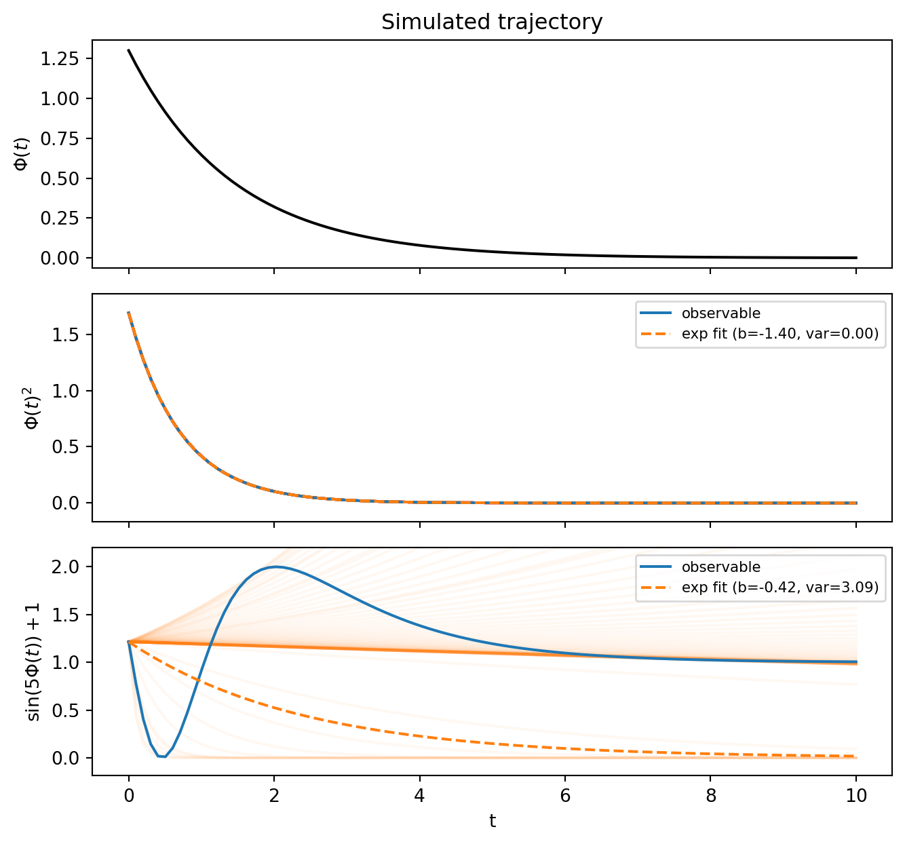
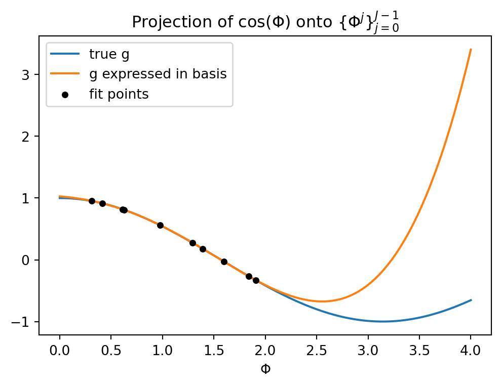
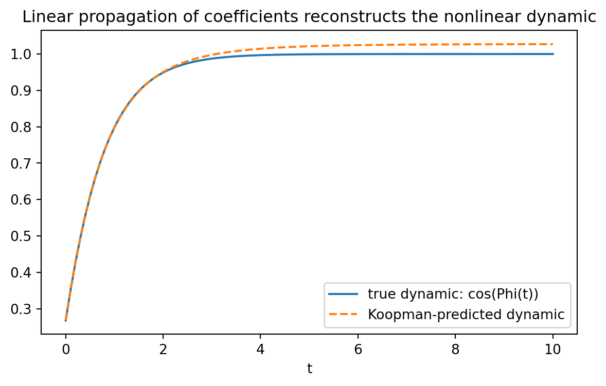

Show imports
import torch
from torchdiffeq import odeint
import matplotlib.pyplot as pltFrom the flow of a dynamical system to a linear, infinite-dimensional operator
Etienne Meunier
June 30, 2026
Consider a (possibly nonlinear) dynamical system on the state \(\Phi(t)\):
\[ \frac{d\Phi(t)}{dt} = S(\Phi(t)) \]
Integrating from an initial condition \(\Phi_0\) defines the flow \(T\):
\[ T(\Phi_0, t) = \Phi_0 + \int_0^t S(\Phi(t'))\, dt' = \Phi(t) \]
\(T\) maps an initial condition \(\Phi_0\) and a time \(t\) to the state reached at time \(t\). It is, in general, nonlinear in \(\Phi_0\) — that nonlinearity is exactly the difficulty Koopman theory is built to sidestep.
Instead of tracking the state \(\Phi\) directly, Koopman theory tracks observables — scalar functions of the state. For every observable \(\kg : \mathbb{R}^p \to \mathbb{R}\), there exists a linear operator \(K^t : \mathcal{H} \to \mathcal{H}\) such that
\[ K^t \kg(\Phi_0) = \kg\big(T(\Phi_0, t)\big) \]
Koopman eigenfunctions are special observables \(\kPsi_j\) (\(j = 1, 2, 3, \dots\)) that are eigenfunctions of \(K^t\) and thus verify :
\[ K^t \kPsi_j(\Phi_0) = e^{\klam_j t} \kPsi_j(\Phi_0) \]
There could be an infinity of observables for a given dynamic, in practice we will restrict to \(J\).
Any observable \(\kg\) can be written as a (generally infinite) linear combination of the \(\kPsi_j\):
\[ \kg(\Phi_0) = \sum_{j=0}^{\infty} \kv_j \kPsi_j(\Phi_0) \]
Once \(\kg\) is expressed in the eigenbasis we can use the eigenfunction property to propagate it forward in time as easily as multiplying each coefficient with an exponential factor :
\[ K^t \kg(\Phi_0) = \sum_j \kv_j K^t \kPsi_j(\Phi_0) = \sum_j \kv_j e^{\klam_j t} \kPsi_j(\Phi_0) \]
Although in practice, finding a set of \(\kPsi_j\) that respect the linearity constraint while allowing for a good reconstruction of any observable is not easy, that’s what we are going to see in the next section !
Take the simplest possible case:
\[ \frac{d\Phi(t)}{dt} = \klam \Phi(t) \quad \Longrightarrow \quad T(\Phi_0, t) = e^{\klam t} \Phi_0 \]
Let’s first run it to get a ground-truth trajectory :
Step 1 : From the simulated trajectory we find a set of functions that respect the linearity constraint
\[ \{\kpsi_j\}_{j=1}^{J} \quad \text{s.t.} \quad \kpsi_j\big(T(\phi_0, t)\big) = e^{\klam_j t}\, \kpsi_j(\phi_0) \]
Step 2 : We express our observable function \(\kg\) in this basis \(\kPsi\) :
\[ \kv^\star = \arg\min_{\kv} \int_\phi \Big(\sum_{j=1}^{J} \kv_j\, \kpsi_j(\phi) - \kg(\phi)\Big)^2 d\phi \]
Step 3 : from the initial observation \(\kg(\phi_0)\) we can forecast :
\[ \kg(\phi_t) \approx \sum_{j=1}^{J} \kv_j\, e^{\klam_j t}\, \kpsi_j(\phi_0) \]
Try a few candidate observables \(\kg\) and check whether \(K^t \kg(\Phi_0) = \kg(T(\Phi_0,t))\) matches a pure exponential \(e^{\klam_j t} \kg(\Phi_0)\):
| Candidate | Test | Eigenfunction? |
|---|---|---|
| \(\kg_1(\Phi) = \Phi\) | \(K^t \kg_1(\Phi_0) = \kg_1\big(e^{\klam t}\Phi_0\big) = e^{\klam t} \kg_1(\Phi_0)\) | ✓ |
| \(\kg_2(\Phi) = \Phi^2\) | \(K^t \kg_2(\Phi_0) = \kg_2\big(e^{\klam t}\Phi_0\big) = e^{2\klam t}\Phi_0^2 = e^{2\klam t} \kg_2(\Phi_0)\) | ✓ |
| \(\kg_3(\Phi) = \sin(\Phi)\) | \(K^t \kg_3(\Phi_0) = \kg_3\big(e^{\klam t}\Phi_0\big) \neq e^{\klam t} \kg_3(\Phi_0)\) | ✗ |
In general, \(\kPsi_k(\Phi) = \Phi^k\) for \(k \in \mathbb{N}\) are Koopman eigenfunctions of this dynamics, with eigenvalue \(k\klam\). Not every observable is an eigenfunction — \(\sin(\Phi)\) is the counter-example.
We can check this numerically: simulate the true trajectory, evaluate a candidate observable along it, and fit an exponential \(\kg(\Phi(t)) = \kg(\Phi_0)\, e^{bt}\). If the candidate is a genuine eigenfunction, the fitted slopes \(b\) at every time point should agree (low variance) and match the predicted eigenvalue.
# model: g(Phi(t)) = g(Phi0) * exp(b*t), with a = g(Phi0) fixed (known), so we only
# fit the slope b of log(g(Phi(t)) / g(Phi0)) = b*t (line through origin). g(Phi(t))
# and g(Phi0) share the same sign here (Phi(t) never crosses zero unless Phi0 = 0).
observables = {
r"$\Phi(t)^2$": lambda phi: phi ** 2,
r"$\sin(5\Phi(t))+1$": lambda phi: torch.sin(5 * phi) + 1,
}
obs_fit = {}
for k, g in observables.items():
gt = g(phit)
lbds = torch.log(gt[1:] / gt[0]) / t_eval[1:] # per-timepoint lambda estimate
fits_each = gt[0] * torch.exp(lbds[:, None] * t_eval) # (n_lbds, T) - one exp fit per estimate
fit_t = gt[0] * torch.exp(lbds.mean() * t_eval) # exp fit using the average lambda
obs_fit[k] = {"gt": gt, "fit_t": fit_t, "fits_each": fits_each, "lambda": lbds.mean(), "var": lbds.var()}fig, axes = plt.subplots(len(observables) + 1, 1, figsize=(7, 2.2 * (len(observables) + 1)), sharex=True)
axes[0].plot(t_eval, phit, color="black")
axes[0].set_ylabel(r"$\Phi(t)$")
axes[0].set_title("Simulated trajectory")
for ax, (label, d) in zip(axes[1:], obs_fit.items()):
ax.plot(t_eval, d["fits_each"].T, color="C1", alpha=0.05)
ax.plot(t_eval, d["gt"], label="observable")
ax.plot(t_eval, d["fit_t"], "--", color="C1", label=f"exp fit (b={d['lambda']:.2f}, var={d['var']:.2f})")
y_lo = torch.minimum(d["gt"].min(), d["fit_t"].min())
y_hi = torch.maximum(d["gt"].max(), d["fit_t"].max())
margin = 0.1 * (y_hi - y_lo)
ax.set_ylim((y_lo - margin).item(), (y_hi + margin).item())
ax.set_ylabel(label)
ax.legend(loc="upper right", fontsize=8)
axes[-1].set_xlabel("t")
fig.tight_layout()
plt.show()
In this simple case we figure out that \(\kpsi_j(T(t, \phi)) = e^{j\klam t} \kpsi_j(\phi)\ \forall j \in \mathbb{N}\) and thus they are all eigenfunctions with eigenvalues \(j\klam\).
Take \(\kg(\Phi) = \cos(\Phi)\), which is not itself an eigenfunction. The goal is to express it as
\[ \kg(\Phi) = \sum_{j=0}^{J} \kv_j \kpsi_j(\Phi) \qquad \forall\, \Phi \in \mathbb{R} \]
This amounts to projecting \(\kg\) onto the basis of eigenfunctions, which can be done by least squares:
\[ \kvb = \arg \min_{\kvb} \int_{\phi} \Big(\sum_{j=0}^{J} \kv_j \kpsi_j(\phi) - \kg(\phi)\Big)^2 d\phi \]
Since the only unknowns are in \(\kvb\), this is a convex problem whenever the \(\kpsi_j\) are linearly independent:
\[ \begin{align} \kvb &= \arg \min_{\kvb} \int_{\phi} \big(\mathbf{\kPsi}(\phi) \cdot \kv - \kg(\phi)\big)^2 d\phi\\[4pt] &\int_\phi \mathbf{\kPsi}(\phi)^T\big(\mathbf{\kPsi}(\phi) \cdot \kv^\star - \kg(\phi)\big)\, d\phi \triangleq 0\\[4pt] \kv^\star &= \Big[\int_\phi \mathbf{\kPsi}(\phi)^T\mathbf{\kPsi}(\phi)\, d\phi\Big]^{-1} \cdot \Big[\int_\phi \mathbf{\kPsi}(\phi)\, \kg(\phi)\, d\phi\Big] \end{align} \]
The integrals can be approximated by sample expectations over \(\phi\) :
\[ f(x) = f(a) + (x-a) f'(a) + \frac{(x-a)^2}{2!} f''(a) + \dots \]
Because \(\kPsi_j(\Phi) = \Phi^j\) is a polynomial basis, we could alternatively use the ordinary Taylor (Maclaurin) series of \(\cos\) centered at \(a=0\):
\[ \cos(\Phi_0) = \sum_{j=0}^{\infty} \frac{\cos^{(j)}(0)}{j!} \Phi_0^j \qquad \Rightarrow \qquad \kv_j = \frac{\cos^{(j)}(0)}{j!} \]
This shortcut only works because the eigenbasis happens to coincide with a power series basis; the general least-squares projection above works regardless of the basis.
xs = torch.linspace(0, 4, 100)
plt.figure(figsize=(6, 4))
plt.plot(xs, target_g(xs), label="true g")
plt.plot(xs, pred_g(xs), label="g expressed in basis")
plt.scatter(phis, target_g(phis), color="black", s=15, zorder=5, label="fit points")
plt.xlabel(r"$\Phi$")
plt.legend()
plt.title(r"Projection of $\cos(\Phi)$ onto $\{\Phi^j\}_{j=0}^{J-1}$")
plt.show()
Now that \(\kg\) is expressed in the basis of eigenfunctions for any \(\Phi\) (Step 2), we can apply that same identity at \(\Phi(t) = T(\Phi_0, t)\) and use the eigenfunction property to propagate the signal in this space :
\[ \kg\big(\Phi(t)\big) = \sum_{j=0}^{\infty} \kv_j \kpsi_j\big(\Phi(t)\big) = \sum_{j=0}^{\infty} \kv_j \kpsi_j\big(T(\Phi_0, t)\big) \overset{\text{eig.}}{=} \sum_{j=0}^{\infty} \kv_j\, e^{\klam_j t}\, \kpsi_j(\Phi_0) \]
In practice \(j\) is finite, so this is an approximation !

The agreement (within the truncation error of using only \(J=5\) basis functions) is the key payoff of the Koopman framework: a nonlinear flow on \(\Phi\) becomes a finite set of independent exponentials on the coefficients \(\kv_j\).
It seems like a cool way to approximate a physical model — why not apply it to nonlinear, high-dimensional dynamics ?
First, we found the eigenfunctions in an arbitrary way by testing a few candidates; finding meaningful functions that respect linearity in high-dimensional settings is much harder, there might be no closed form for the function and the optimization over functional space is a hard task !
Second, even if we find a set of eigenfunctions, they might not represent the observable of interest well : we need functions that truly capture the target signal.
What’s interesting is the reasoning : eigenfunctions are specific to the dynamical system, but the basis we pick from that infinite family should be tailored to the target observable — a good basis depends on what we’re trying to observe.
Stepping back, the whole procedure above — search for eigenfunctions, then project a target observable onto them — can be seen as a single nested optimization:
\[ \begin{align} &\{ \kpsi_j \} = \arg \min_{\kpsi_j} \left[ \min_{\kv}\; \int_t \Big(\kg\big(T(t, \phi_0)\big) - \sum_{j=0}^{J} \kv_j\, \kpsi_j\big(T(t, \phi_0)\big)\Big)^2 dt \right] \\ &\text{subject to} \quad \kpsi_j\big(T(t, \phi_0)\big) = e^{\klam_j (t - t_0)}\, \kpsi_j\big(T(t_0, \phi_0)\big) \end{align} \]
In a next chapter we will see how this dual optimization procedure relate to koopman based data-driven methods !
---
title: "Koopman Eigenfunctions — An Introduction"
subtitle: "From the flow of a dynamical system to a linear, infinite-dimensional operator"
author: "Etienne Meunier"
date: today
format:
html:
number-sections: true
code-fold: show
code-tools: true
include-in-header:
text: |
<script>
window.MathJax = {
tex: {
macros: {
kpsi: ["\\textcolor{#1f77b4}{\\psi}", 0],
kPsi: ["\\textcolor{#1f77b4}{\\Psi}", 0],
klam: ["\\textcolor{#ff7f0e}{\\lambda}", 0],
kv: ["\\textcolor{#9467bd}{v}", 0],
kvb: ["\\textcolor{#9467bd}{\\mathbf{v}}", 0],
kg: ["\\textcolor{#2ca02c}{g}", 0]
}
}
};
</script>
---
# Introduction :
## Dynamical system and its flow
Consider a (possibly nonlinear) dynamical system on the state $\Phi(t)$:
$$
\frac{d\Phi(t)}{dt} = S(\Phi(t))
$$
Integrating from an initial condition $\Phi_0$ defines the **flow** $T$:
$$
T(\Phi_0, t) = \Phi_0 + \int_0^t S(\Phi(t'))\, dt' = \Phi(t)
$$
$T$ maps an initial condition $\Phi_0$ and a time $t$ to the state reached at time $t$. It is, in general, nonlinear in $\Phi_0$ — that nonlinearity is exactly the difficulty Koopman theory is built to sidestep.
## The Koopman operator
Instead of tracking the state $\Phi$ directly, Koopman theory tracks **observables** — scalar functions of the state. For every observable $\kg : \mathbb{R}^p \to \mathbb{R}$, there exists a linear operator $K^t : \mathcal{H} \to \mathcal{H}$ such that
$$
K^t \kg(\Phi_0) = \kg\big(T(\Phi_0, t)\big)
$$
### Koopman eigenfunctions
Koopman eigenfunctions are *special observables* $\kPsi_j$ ($j = 1, 2, 3, \dots$) that are eigenfunctions of $K^t$ and thus verify :
$$
K^t \kPsi_j(\Phi_0) = e^{\klam_j t} \kPsi_j(\Phi_0)
$$
There could be an infinity of observables for a given dynamic, in practice we will restrict to $J$.
### Decomposing a general observable in this basis
Any observable $\kg$ can be written as a (generally infinite) linear combination of the $\kPsi_j$:
$$
\kg(\Phi_0) = \sum_{j=0}^{\infty} \kv_j \kPsi_j(\Phi_0)
$$
Once $\kg$ is expressed in the eigenbasis we can use the eigenfunction property to propagate it forward in time as easily as multiplying each coefficient with an exponential factor :
$$
K^t \kg(\Phi_0) = \sum_j \kv_j K^t \kPsi_j(\Phi_0) = \sum_j \kv_j e^{\klam_j t} \kPsi_j(\Phi_0)
$$
Although in practice, finding a set of $\kPsi_j$ that respect the linearity constraint while allowing for a good reconstruction of any observable is not easy, that's what we are going to see in the next section !
## Worked example: scalar linear ODE
Take the simplest possible case:
$$
\frac{d\Phi(t)}{dt} = \klam \Phi(t)
\quad \Longrightarrow \quad
T(\Phi_0, t) = e^{\klam t} \Phi_0
$$
Let's first run it to get a ground-truth trajectory :
```{python}
#| label: imports
#| code-fold: true
#| code-summary: "Show imports"
import torch
from torchdiffeq import odeint
import matplotlib.pyplot as plt
```
```{python}
#| label: setup
lam = -0.7
phi0 = torch.tensor(1.3)
t_span = (0.0, 10.0)
t_eval = torch.linspace(t_span[0], t_span[1], 100)
f = lambda t, phi: lam * phi
phit = odeint(f, phi0, t_eval) # true trajectory
```
### Koopman decompostion : the plan
**Step 1 :** From the simulated trajectory we find a set of functions that respect the linearity constraint
::: {.callout-note icon=false appearance="simple"}
$$
\{\kpsi_j\}_{j=1}^{J} \quad \text{s.t.} \quad \kpsi_j\big(T(\phi_0, t)\big) = e^{\klam_j t}\, \kpsi_j(\phi_0)
$$
:::
**Step 2 :** We express our observable function $\kg$ in this basis $\kPsi$ :
::: {.callout-note icon=false appearance="simple"}
$$
\kv^\star = \arg\min_{\kv} \int_\phi \Big(\sum_{j=1}^{J} \kv_j\, \kpsi_j(\phi) - \kg(\phi)\Big)^2 d\phi
$$
:::
**Step 3 :** from the initial observation $\kg(\phi_0)$ we can forecast :
::: {.callout-note icon=false appearance="simple"}
$$
\kg(\phi_t) \approx \sum_{j=1}^{J} \kv_j\, e^{\klam_j t}\, \kpsi_j(\phi_0)
$$
:::
### Step 1 — search for eigenfunctions
Try a few candidate observables $\kg$ and check whether $K^t \kg(\Phi_0) = \kg(T(\Phi_0,t))$ matches a pure exponential $e^{\klam_j t} \kg(\Phi_0)$:
| Candidate | Test | Eigenfunction? |
|---|---|:---:|
| $\kg_1(\Phi) = \Phi$ | $K^t \kg_1(\Phi_0) = \kg_1\big(e^{\klam t}\Phi_0\big) = e^{\klam t} \kg_1(\Phi_0)$ | ✓ |
| $\kg_2(\Phi) = \Phi^2$ | $K^t \kg_2(\Phi_0) = \kg_2\big(e^{\klam t}\Phi_0\big) = e^{2\klam t}\Phi_0^2 = e^{2\klam t} \kg_2(\Phi_0)$ | ✓ |
| $\kg_3(\Phi) = \sin(\Phi)$ | $K^t \kg_3(\Phi_0) = \kg_3\big(e^{\klam t}\Phi_0\big) \neq e^{\klam t} \kg_3(\Phi_0)$ | ✗ |
In general, $\kPsi_k(\Phi) = \Phi^k$ for $k \in \mathbb{N}$ are Koopman eigenfunctions of this dynamics, with eigenvalue $k\klam$. Not every observable is an eigenfunction — $\sin(\Phi)$ is the counter-example.
We can check this numerically: simulate the true trajectory, evaluate a candidate observable along it, and fit an exponential $\kg(\Phi(t)) = \kg(\Phi_0)\, e^{bt}$. If the candidate is a genuine eigenfunction, the fitted slopes $b$ at every time point should agree (low variance) and match the predicted eigenvalue.
```{python}
#| label: eigentest-compute
# model: g(Phi(t)) = g(Phi0) * exp(b*t), with a = g(Phi0) fixed (known), so we only
# fit the slope b of log(g(Phi(t)) / g(Phi0)) = b*t (line through origin). g(Phi(t))
# and g(Phi0) share the same sign here (Phi(t) never crosses zero unless Phi0 = 0).
observables = {
r"$\Phi(t)^2$": lambda phi: phi ** 2,
r"$\sin(5\Phi(t))+1$": lambda phi: torch.sin(5 * phi) + 1,
}
obs_fit = {}
for k, g in observables.items():
gt = g(phit)
lbds = torch.log(gt[1:] / gt[0]) / t_eval[1:] # per-timepoint lambda estimate
fits_each = gt[0] * torch.exp(lbds[:, None] * t_eval) # (n_lbds, T) - one exp fit per estimate
fit_t = gt[0] * torch.exp(lbds.mean() * t_eval) # exp fit using the average lambda
obs_fit[k] = {"gt": gt, "fit_t": fit_t, "fits_each": fits_each, "lambda": lbds.mean(), "var": lbds.var()}
```
```{python}
#| label: fig-eigentest
#| fig-cap: "Testing candidate observables: $\\Phi(t)^2$ is a true eigenfunction (the faint per-timepoint exp fits collapse onto the average fit), $\\sin(5\\Phi(t))+1$ is not (the faint fits fan out)."
#| code-fold: true
#| code-summary: "Show plotting code"
fig, axes = plt.subplots(len(observables) + 1, 1, figsize=(7, 2.2 * (len(observables) + 1)), sharex=True)
axes[0].plot(t_eval, phit, color="black")
axes[0].set_ylabel(r"$\Phi(t)$")
axes[0].set_title("Simulated trajectory")
for ax, (label, d) in zip(axes[1:], obs_fit.items()):
ax.plot(t_eval, d["fits_each"].T, color="C1", alpha=0.05)
ax.plot(t_eval, d["gt"], label="observable")
ax.plot(t_eval, d["fit_t"], "--", color="C1", label=f"exp fit (b={d['lambda']:.2f}, var={d['var']:.2f})")
y_lo = torch.minimum(d["gt"].min(), d["fit_t"].min())
y_hi = torch.maximum(d["gt"].max(), d["fit_t"].max())
margin = 0.1 * (y_hi - y_lo)
ax.set_ylim((y_lo - margin).item(), (y_hi + margin).item())
ax.set_ylabel(label)
ax.legend(loc="upper right", fontsize=8)
axes[-1].set_xlabel("t")
fig.tight_layout()
plt.show()
```
In this simple case we figure out that $\kpsi_j(T(t, \phi)) = e^{j\klam t} \kpsi_j(\phi)\ \forall j \in \mathbb{N}$ and thus they are all eigenfunctions with eigenvalues $j\klam$.
```{python}
#| label: basis-setup
J = 5
Psi = lambda x: torch.stack([x ** k for k in range(0, J)], dim=-1)
lambdas = torch.tensor([k * lam for k in range(J)])
```
### Step 2 — decompose a general observable in this eigenbasis
Take $\kg(\Phi) = \cos(\Phi)$, which is *not* itself an eigenfunction. The goal is to express it as
$$
\kg(\Phi) = \sum_{j=0}^{J} \kv_j \kpsi_j(\Phi) \qquad \forall\, \Phi \in \mathbb{R}
$$
#### General projection
This amounts to projecting $\kg$ onto the basis of eigenfunctions, which can be done by least squares:
$$
\kvb = \arg \min_{\kvb} \int_{\phi} \Big(\sum_{j=0}^{J} \kv_j \kpsi_j(\phi) - \kg(\phi)\Big)^2 d\phi
$$
Since the only unknowns are in $\kvb$, this is a convex problem whenever the $\kpsi_j$ are linearly independent:
$$
\begin{align}
\kvb &= \arg \min_{\kvb} \int_{\phi} \big(\mathbf{\kPsi}(\phi) \cdot \kv - \kg(\phi)\big)^2 d\phi\\[4pt]
&\int_\phi \mathbf{\kPsi}(\phi)^T\big(\mathbf{\kPsi}(\phi) \cdot \kv^\star - \kg(\phi)\big)\, d\phi \triangleq 0\\[4pt]
\kv^\star &= \Big[\int_\phi \mathbf{\kPsi}(\phi)^T\mathbf{\kPsi}(\phi)\, d\phi\Big]^{-1} \cdot \Big[\int_\phi \mathbf{\kPsi}(\phi)\, \kg(\phi)\, d\phi\Big]
\end{align}
$$
The integrals can be approximated by sample expectations over $\phi$ :
::: {.callout-note collapse="true"}
#### Specific projection for this case
::: {.callout-note collapse="true"}
##### Reminder: Taylor expansion of a scalar function (centered at a point $a$)
$$
f(x) = f(a) + (x-a) f'(a) + \frac{(x-a)^2}{2!} f''(a) + \dots
$$
:::
Because $\kPsi_j(\Phi) = \Phi^j$ is a polynomial basis, we could alternatively use the ordinary Taylor (Maclaurin) series of $\cos$ centered at $a=0$:
$$
\cos(\Phi_0) = \sum_{j=0}^{\infty} \frac{\cos^{(j)}(0)}{j!} \Phi_0^j
\qquad \Rightarrow \qquad \kv_j = \frac{\cos^{(j)}(0)}{j!}
$$
This shortcut only works because the eigenbasis happens to coincide with a power series basis; the general least-squares projection above works regardless of the basis.
:::
```{python}
#| label: projection-compute
target_g = lambda phi: torch.cos(phi)
phis = torch.rand(10) * 2.0 # (10,) sample points
psi_phi = Psi(phis) # (10, J)
E = psi_phi.T @ psi_phi # (J, J) Gram matrix
C = psi_phi.T @ target_g(phis) # (J,)
v_star = torch.linalg.pinv(E) @ C # least-squares coefficients
pred_g = lambda x: Psi(x) @ v_star
```
```{python}
#| label: fig-projection
#| fig-cap: "Projecting g(phi) = cos(phi) onto the polynomial eigenbasis {phi^0, ..., phi^(J-1)} via least squares."
#| code-fold: true
#| code-summary: "Show plotting code"
xs = torch.linspace(0, 4, 100)
plt.figure(figsize=(6, 4))
plt.plot(xs, target_g(xs), label="true g")
plt.plot(xs, pred_g(xs), label="g expressed in basis")
plt.scatter(phis, target_g(phis), color="black", s=15, zorder=5, label="fit points")
plt.xlabel(r"$\Phi$")
plt.legend()
plt.title(r"Projection of $\cos(\Phi)$ onto $\{\Phi^j\}_{j=0}^{J-1}$")
plt.show()
```
### Step 3 — propagate
Now that $\kg$ is expressed in the basis of eigenfunctions for *any* $\Phi$ (Step 2), we can apply that same identity at $\Phi(t) = T(\Phi_0, t)$ and use the eigenfunction property to propagate the signal in this space :
$$
\kg\big(\Phi(t)\big) = \sum_{j=0}^{\infty} \kv_j \kpsi_j\big(\Phi(t)\big) = \sum_{j=0}^{\infty} \kv_j \kpsi_j\big(T(\Phi_0, t)\big) \overset{\text{eig.}}{=} \sum_{j=0}^{\infty} \kv_j\, e^{\klam_j t}\, \kpsi_j(\Phi_0)
$$
In practice $j$ is finite, so this is an approximation !
```{python}
#| label: propagation-compute
# Decompose initial state to the modes we found
psi0 = Psi(phi0) # (J,)
#Each mode propagated by its own exponential
psit = torch.exp(t_eval[:, None] * lambdas) * psi0 # (T, J)
pred_dyn = psit @ v_star
```
```{python}
#| label: fig-propagation
#| fig-cap: "Propagating cos(Phi(t)) via the Koopman eigenbasis vs. the true dynamic."
#| code-fold: true
#| code-summary: "Show plotting code"
plt.figure(figsize=(7, 4))
plt.plot(t_eval, target_g(phit), label="true dynamic: cos(Phi(t))")
plt.plot(t_eval, pred_dyn, "--", label="Koopman-predicted dynamic")
plt.xlabel("t")
plt.legend()
plt.title("Linear propagation of coefficients reconstructs the nonlinear dynamic")
plt.show()
```
The agreement (within the truncation error of using only $J=5$ basis functions) is the key payoff of the Koopman framework: a nonlinear flow on $\Phi$ becomes a finite set of independent exponentials on the coefficients $\kv_j$.
## Discussion
### Why can't we do this in practice ?
It seems like a cool way to approximate a physical model — why not apply it to nonlinear, high-dimensional dynamics ?
First, we found the eigenfunctions in an arbitrary way by testing a few candidates; finding meaningful functions that respect linearity in high-dimensional settings is much harder, there might be no closed form for the function and the optimization over functional space is a hard task !
Second, even if we find a set of eigenfunctions, they might not represent the observable of interest well : we need functions that truly capture the target signal.
What's interesting is the reasoning : eigenfunctions are specific to the dynamical system, but the basis we pick from that infinite family should be tailored to the target observable — a good basis depends on what we're trying to observe.
### Koopman as an optimization problem
Stepping back, the whole procedure above — search for eigenfunctions, then project a target observable onto them — can be seen as a single nested optimization:
$$
\begin{align}
&\{ \kpsi_j \} = \arg \min_{\kpsi_j} \left[ \min_{\kv}\; \int_t \Big(\kg\big(T(t, \phi_0)\big) - \sum_{j=0}^{J} \kv_j\, \kpsi_j\big(T(t, \phi_0)\big)\Big)^2 dt \right] \\
&\text{subject to} \quad \kpsi_j\big(T(t, \phi_0)\big) = e^{\klam_j (t - t_0)}\, \kpsi_j\big(T(t_0, \phi_0)\big)
\end{align}
$$
In a next chapter we will see how this dual optimization procedure relate to koopman based data-driven methods !